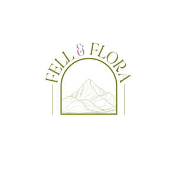

Trade Mark Journal No.2025/032 8 August 2025
UK00004239194 24 July 2025 (3,4)

- Class 3
- Skincare cosmetics; Anti-aging skincare preparations; Anti-aging moisturizers used as cosmetics; Skincare preparations; Moisturisers [cosmetics]; Skin moisturizers used as cosmetics; Anti-aging moisturizers; Anti-ageing moisturiser; Suncare lotions [for cosmetic use]; Cosmetic moisturisers; Anti-ageing creams [for cosmetic use]; Cosmetic products in the form of aerosols for skincare; Moisturising skin lotions [cosmetic]; Anti-aging creams [for cosmetic use]; Beauty serums; Acne cleansers, cosmetic; Facial moisturisers [cosmetic]; Non-medicated skincare preparations; Skin cleansers [cosmetic]; Moisturising skin creams [cosmetic]; Suncare lotions; Beauty serums with anti-ageing properties; Facial creams [cosmetics]; Anti-aging creams; Anti-ageing creams; Anti-ageing serums for cosmetic purposes; Skin moisturisers; After-sun oils [cosmetics]; Skin care lotions [cosmetic]; Skin care cosmetics; Beauty lotions; Skin moisturizers; Skin moisturizer; Skin moisturiser; Skin balms [cosmetic]; After-sun lotions [for cosmetic use]; Moisturisers; Beauty care cosmetics; Skin care creams [cosmetic]; Cosmetic creams for skin care; Skin recovery creams [cosmetics]; Skin creams [cosmetic]; Skin creams [for cosmetic use]; Cosmetic creams for the skin; Sunscreen creams [for cosmetic use]; Facial cleansers [cosmetic]; Anti-wrinkle creams [for cosmetic use]; Cosmetics; Cosmetic nourishing creams; Skin cleansers; Skin masks [cosmetics]; Moisturiser; Self-tanning preparations [cosmetics]; Moisturizers; Cleansing creams [cosmetic]; Skin moisturizer masks; Anti-ageing serum; Hairstyling serums; Cosmetic facial lotions; Facial lotions [cosmetic]; Exfoliants for the care of the skin; Non-medicated skin serums; Body and facial creams [cosmetics]; Cosmetic creams and lotions; Facial moisturizers; Exfoliants for the cleansing of the skin; Skin care oils [cosmetic]; Anti-aging serum for cosmetic use; Beauty creams; Moisturising body lotion [cosmetic]; Skin lotions; Lotions for the skin; Beauty balm creams; Hair care lotions [for cosmetic use]; Skin fresheners [cosmetics]; Sunscreens [for cosmetic use]; Skin cleansing lotion; After-sun milks [cosmetics]; Cosmetic massage creams; Skin toners [cosmetic]; Body creams [cosmetics]; Hair care creams [for cosmetic use]; Skin whitening creams; Creams (Skin whitening -); Sunscreen [for cosmetic use]; Tanning oils [cosmetics]; Cosmetic hair lotions; Facial creams [cosmetic]; Facial creams [for cosmetic use]; Sun care lotions [for cosmetic use]; Skin make-up; Exfoliating creams; Suntan lotion [cosmetics]; Skin cleansers [non-medicated]; After-sun milk [cosmetics]; Hair moisturisers; Skin whitening preparations [cosmetic]; Moisturizing creams; Creams for tanning the skin; Cosmetic products for the shower; Cosmetics for use in the treatment of wrinkled skin; Aromatherapy creams; Skin cream [for cosmetic use]; Skin lotion; Creams (Cosmetic -); Cosmetic creams; Anti-aging cream; Cosmetics for use on the skin; Organic cosmetics; Aromatherapy lotions; Skin hydrators; Cleansing lotions; Night creams [cosmetics]; Skin hydrators for cosmetic purposes; Facial gels [cosmetics]; After-sun lotions; Anti-wrinkle creams; Hair care serums; Beauty creams for body care; Facial cleansers; Exfoliant creams; Anti-wrinkle cream [for cosmetic use]; Cosmetic preparations for skin firming; Self-tanning preparations [cosmetic]; Cosmetic products in the form of aerosols for skin care; Moisturising creams; Colour cosmetics for the skin; Moisturising gels [cosmetic]; Skin creams; Creams for the skin; Cosmetics for suntanning; Hair moisturizers; Moisturizing preparations for the skin; Hair cosmetics; Hydrating creams for cosmetic use.
- Class 4
- Candles; Candles and wicks for candles for lighting; Tealight candles; Votive candles; Scented candles; Wicks for candles; Candles for use as nightlights; Nightlights [candles]; Candles for lighting; Fragranced candles; Wicks for candles for lighting; Candles and wicks for lighting; Tallow candles; Candles in tins; Candle torches; Perfumed candles; Candles (Perfumed -); Soy candles; Christmas lights [candles]; Candles for use in the decoration of cakes; Table candles; Tea light candles; Church candles; Fruit candles; Floating candles; Aromatherapy fragrance candles; Beeswax for use in the manufacture of candles; Candles for night lights; Wax for making candles; Candle wax; Musk scented candles; Tealights; Grave candles, non-electric; Bougies in the nature of wax candles; Christmas tree decorations for illumination [candles]; Christmas tree candles; Candles (Christmas tree -); Christmas tree ornaments for illumination [candles]; Candles for absorbing smoke; Candle assemblies; Wicks for lighting; Special occasion candles; Wicks for oil lamps; Wax lights; Lamp wicks; Wicks (Lamp -); Wax for lighting; Tea lights; Candles containing insect repellent; Tapers for lighting; Wood shavings for lighting fires.
Fell & Flora Ltd